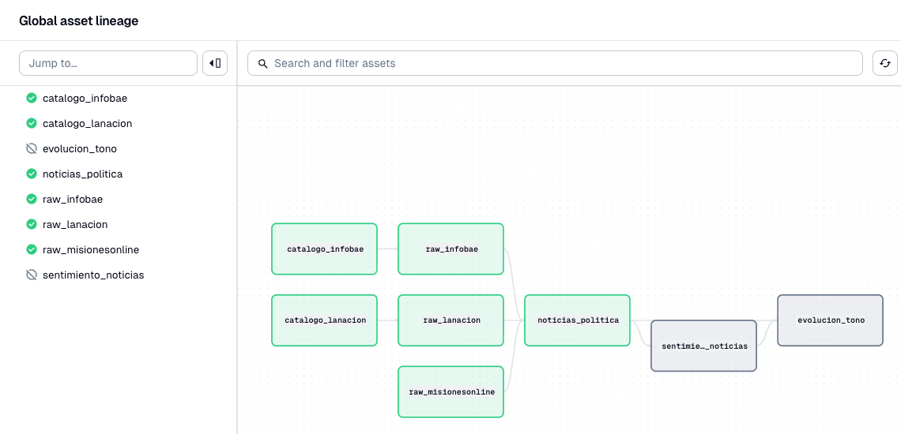
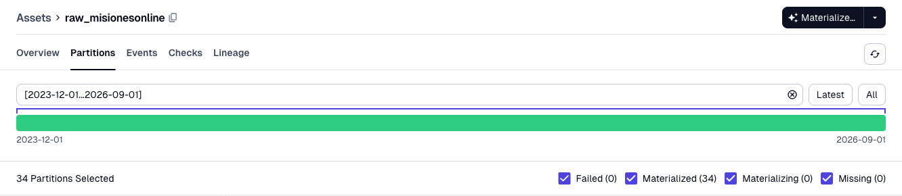

news-politica · informe final ·
¿Cambió el tono de las noticias de política desde que asumió Milei?
Leímos notas de la sección Política de tres medios argentinos, desde el 10 de diciembre de 2023 hasta el 30 de septiembre de 2026.
- En el tiempoCasi no cambió: el clima fue negativo desde el principio y siguió así.
- Entre mediosLa Nación es la más negativa, Infobae la sigue de cerca y MisionesOnline queda cerca de neutro.
- Los hitosEl DNU, la Ley Bases y las elecciones movieron poco el tono, y casi nunca en los tres medios a la vez.
Antes de empezar
Tres medios, tres maneras de contar la política
Elegimos tres medios que representan tres formas de hacer periodismo, para ver si cuentan la política con el mismo tono.
De MisionesOnline leímos todas las notas de Política del período: . Infobae y La Nación publican muchas más, así que de cada uno tomamos una muestra pareja de unas 30 notas por mes ( y en total). Por eso, en lo que sigue, los medios nacionales se miran mes a mes y no día a día.
Tono no es postura. Una nota negativa puede criticar al gobierno, a la oposición o simplemente contar algo malo, como una protesta o una derrota en el Congreso. El puntaje mide el clima del texto, no de qué lado está el medio. "Más negativo" no quiere decir "más opositor".
Detrás de escena
Una línea de montaje que convierte miles de páginas web en una tabla
Bajar nueve mil notas a mano no es posible, así que armamos una "línea de montaje" automática con Dagster, una herramienta que ejecuta cada paso en orden y registra qué salió bien y qué no. Cada recuadro de este mapa es un paso, y las líneas muestran qué paso alimenta a cuál.
- Encontrar las notasRecorrimos los índices diarios que Infobae y La Nación publican para los buscadores, y nos quedamos con las de Política.
- Bajarlas con cortesíaUna nota cada dos segundos, solo por las rutas que cada sitio permite, mes por mes.
- UnirlasLos tres medios en una sola tabla, con las mismas columnas y sin notas repetidas.
- Ponerles notaEl modelo puntúa cada nota y después se resume el tono por semana.


Capítulo 1 · La pregunta principal
¿Cómo cambió el tono de las noticias de política desde diciembre de 2023?
El tono casi no se movió en casi tres años
Mes a mes, cada medio se mueve dentro de una franja angosta. No hay una caída sostenida ni una recuperación: el clima de la cobertura política ya era negativo en diciembre de 2023 y sigue en el mismo lugar.
Ver los datos
En este período la cobertura política no "se puso" negativa en algún momento: fue negativa todo el tiempo. Lo que cambia de un mes a otro es chico comparado con la diferencia que hay entre un medio y otro, que es el tema del capítulo siguiente.
Capítulo 2 · La pregunta principal
¿Difiere el tono entre un medio digital, uno tradicional y uno provincial?
La Nación suena más negativa que Infobae, y MisionesOnline mucho menos que los dos
Casi la mitad de las notas de La Nación tienen tono negativo (). En Infobae son y en MisionesOnline, . Las notas positivas son raras en los dos nacionales y bastante más frecuentes en el medio provincial ().
¿Y si el modelo se equivoca? Para comprobarlo, puntuamos las mismas notas con otros dos modelos que funcionan de otra manera. Cada uno usa la escala a su modo (por eso los puntos no coinciden), pero
Entre los dos nacionales, el diario tradicional es algo más negativo que el digital. La diferencia grande no está entre lo digital y lo tradicional, sino entre lo nacional y lo provincial. El capítulo 4 muestra de dónde sale buena parte de esa diferencia.
Capítulo 3 · Pregunta secundaria
¿Hay quiebres de tono alrededor de los grandes hitos políticos?
Los grandes momentos políticos movieron poco el tono
Para cada hito comparamos las dos semanas anteriores con las dos semanas posteriores, en cada medio. Si el hito hubiera cambiado el clima de la cobertura, el punto de "después" debería quedar lejos del de "antes".
Ver los datos
Capítulo 4 · Pregunta secundaria
¿El medio provincial cubre la política con un tono distinto al de los nacionales?
Sí, salvo cuando reproduce noticias de los medios nacionales: ahí suena como ellos
Algunas notas de MisionesOnline cierran con una línea como "Fuente: TN" o "Fuente: Infobae": son notas de otros medios que el sitio reproduce o reescribe. Son de ().
Separadas del resto, esas notas tienen un tono de , muy cerca de Infobae () y La Nación (). Las notas que MisionesOnline escribe por su cuenta quedan en , prácticamente neutras.
Buena parte de la diferencia entre lo provincial y lo nacional no está en dónde se escribe, sino en qué se escribe: cuando MisionesOnline cuenta la misma política que los medios nacionales, con sus palabras, el tono se parece al de ellos. Sus notas propias, más cercanas a la gestión y la vida local, tienen otro clima. Es una asociación, no una prueba: las notas reproducidas suelen tratar temas nacionales, que en todos los medios tienen peor clima.
Las herramientas
Con qué lo hicimos: qué hace cada tecnología en cada paso
Todo el proyecto está hecho con herramientas de código abierto y corre en una computadora común; solo uno de los modelos que probamos necesitó una placa de video. Así viaja una noticia desde el sitio del medio hasta este informe, y estas son las piezas que actúan en cada tramo:
- Encontrarrequests, lxml
- Descargarrequests, Dagster
- Limpiar y unirBeautifulSoup, pandas
- PuntuarPyTorch, Transformers, Ollama
- Resumirpandas, SciPy
- ContarHTML, SVG
-
1
Encontrar las notas de Política
Antes de bajar nada hay que saber qué notas existen. Cada medio ofrece una puerta distinta, y usamos la más simple que el sitio permite:
Medio Cómo encontramos las notas Infobae Su sitemap diario, el índice que publica para los buscadores, filtrado a las direcciones de /politica/. Para que la descarga fuera corta leímos los índices de los días 5 y 20 de cada mes.La Nación Lo mismo, con su sitemap de cada día del período. MisionesOnline La API pública de WordPress: se le piden directamente las notas de la categoría Política entre dos fechas. - requests
- Pide cada índice al sitio, como haría un navegador pero sin abrir la página.
- lxml
- Lee el índice (un archivo XML) y saca de ahí la dirección y la fecha de cada nota.
- Dagster
- Ejecuta este paso como
catalogo_infobaeycatalogo_lanaciony guarda la lista resultante.
-
2
Descargar cada nota, con cortesía
Con la lista en mano, se pide cada nota, mes por mes. Es el paso más largo y el que más cuidado necesita para no molestar a los sitios.
- requests + cliente propio
- Espera 2 segundos entre pedidos a un mismo sitio, reintenta los errores pasajeros esperando cada vez más (2, 8 y 32 segundos) y obedece cuando el sitio pide esperar.
- robots.txt
- Antes de cada pedido el cliente lee este archivo, donde cada sitio dice qué pueden leer los robots. Por eso no usamos la API interna de La Nación: la prohíbe.
- Dagster
- Divide la descarga en 34 partes, una por mes (
raw_infobae,raw_lanacion,raw_misionesonline). Si un mes falla, se repite solo ese. Además deja un solo pedido a la vez por medio. - Postgres + Docker
- Postgres, una base de datos que corre dentro de Docker, guarda el historial de Dagster: qué mes se bajó, cuándo y con qué resultado (la barra verde de la captura).
Si un sitio responde con un desafío anti-robots (le pasó a MisionesOnline por unas horas), el programa se detiene: nunca intenta pasarlo ni se disfraza de navegador.
-
3
Sacar el texto y armar una sola tabla
Cada medio entrega la nota en un formato distinto. Este paso los lleva a todos al mismo molde: título, bajada, cuerpo, autor, fecha y medio.
- Python
- En Infobae y La Nación, cada página trae escondida una ficha con los datos de la nota (el JSON de su sistema Arc XP); el programa la encuentra y la lee. En MisionesOnline la API ya entrega esos datos.
- BeautifulSoup + lxml
- Quitan las etiquetas HTML del cuerpo y dejan solo el texto.
- pandas
- Une los tres medios, elimina notas repetidas, pasa las fechas a hora argentina y marca las notas "en vivo" y las que MisionesOnline toma de otros medios.
- Parquet
- Guarda el resultado,
noticias_politica, en un archivo de tabla comprimido y rápido de leer.
-
4
Ponerle una nota de tono a cada noticia
El modelo lee el título y la bajada de cada nota y estima si el texto es positivo, neutro o negativo. Probamos tres modelos que leen de formas distintas, y elegimos el que más coincidió con una muestra de notas clasificadas de antemano.
Modelo Cómo lee el tono Dónde corre Acierto robertuito (elegido) Una red neuronal entrenada específicamente para clasificar sentimiento en textos en español (tuits). Procesador común mDeBERTa XNLI Un modelo multilingüe que no fue entrenado para sentimiento: se le pregunta si es cierta la frase "El tono de esta noticia es negativo" (y neutro, y positivo). Procesador común Qwen2.5 7B Un modelo de lenguaje grande, como un chatbot, que corre en la propia computadora: lee la nota y responde 1, 2 o 3. Placa de video - PyTorch
- El motor que hace las cuentas de las redes neuronales de robertuito y mDeBERTa.
- Hugging Face Transformers
- Descarga los modelos ya entrenados y los conecta con PyTorch.
- pysentimiento
- Prepara el texto y llama a robertuito con los ajustes con que fue entrenado.
- Ollama
- Corre el modelo de lenguaje Qwen en la placa de video (una NVIDIA RTX 4060), dentro de Docker, y además de la respuesta devuelve qué tan seguro está de cada opción.
- Dagster
- Ejecuta este paso como
sentimiento_noticias: una fila por nota y por modelo, con las tres probabilidades y la nota de tono.
El modelo más chico y especializado le ganó al más grande: el modelo de lenguaje tendía a responder "neutro" casi siempre.
-
5
Resumir el tono en el tiempo y alrededor de los hitos
Con nueve mil notas puntuadas, falta convertirlas en respuestas: promedios por semana y por mes, y la comparación de antes y después de cada hito.
- pandas
- Agrupa las notas por medio y por semana o mes, deja afuera las notas en vivo y arma las ventanas de dos semanas alrededor de cada hito.
- SciPy
- Calcula los márgenes de error: la franja clara del gráfico mensual y si un cambio en un hito es "claro" o no se distingue del ruido.
- Dagster
- Ejecuta este paso como
evolucion_tono, la serie semanal por medio.
-
6
Contarlo en esta página
Un programa recalcula cada número de este informe desde las tablas guardadas, así que ninguna cifra está copiada a mano.
- Python + pandas
- El script
build_report.pycalcula todas las cifras y las guarda dentro de esta misma página. - HTML + JavaScript
- Con esas cifras, la página dibuja cada gráfico (en SVG) al abrirse, en modo claro u oscuro y en cualquier pantalla.
Dagster por dentro: qué hace cada asset
En Dagster, un asset es un dato que el pipeline produce y guarda, por ejemplo una tabla. Cada asset sabe de qué otros assets se alimenta, y así Dagster arma el mapa de la captura de arriba y sabe en qué orden ejecutarlos. Estos son los ocho del proyecto, en el orden en que corren:
| Asset | Qué hace | Se alimenta de | Cómo corre |
|---|---|---|---|
catalogo_infobae | Recorre los sitemaps de Infobae desde el 10/12/2023 y arma la lista de direcciones de notas de Política, con la fecha de cada una. | El sitio de Infobae | Una sola vez. Lee los días 5 y 20 de cada mes para que tarde minutos y no horas. |
catalogo_lanacion | Lo mismo para La Nación. Su lista se armó con los sitemaps de todos los días del período. | El sitio de La Nación | Una sola vez. |
raw_infobae | Baja cada nota de la lista y guarda la ficha de la nota tal como viene del sitio (el JSON de Arc XP). Toma una muestra fija de 30 notas por mes. | catalogo_infobae | Partido en 34 meses, de a uno; un solo pedido a la vez a Infobae. |
raw_lanacion | Lo mismo para La Nación, con la misma muestra de 30 notas por mes. | catalogo_lanacion | Partido en 34 meses; un solo pedido a la vez a La Nación. |
raw_misionesonline | Pide a la API de WordPress todas las notas de Política del mes. No necesita catálogo porque la API ya filtra por fecha. | El sitio de MisionesOnline | Partido en 34 meses; un solo pedido a la vez. |
noticias_politica | Lee las fichas de los tres medios, saca título, bajada, cuerpo, autor y fecha, las pone en el mismo formato, elimina repetidas y recorta al período. Es el dataset. | Los tres raw_* | Una tabla única, sin tocar internet. |
sentimiento_noticias | Le pasa el título y la bajada de cada nota a uno o más modelos y guarda una fila por nota y modelo, con las tres probabilidades y la nota de tono. | noticias_politica | Una tabla única; se elige qué modelos usar al ejecutarlo. |
evolucion_tono | Resume el tono por semana y por medio: cantidad de notas, promedio, margen de error y qué parte fue negativa, neutra o positiva. Deja afuera las notas en vivo. | sentimiento_noticias y noticias_politica | Una tabla única, sin tocar internet. |
Todos guardan su resultado como archivos Parquet en la carpeta data/. Los raw_* guardan un archivo por mes, que es lo que muestra la barra de 34 particiones en verde.
Y en todo el recorrido
- Python 3.12 + uv
- Python es el lenguaje de todo el proyecto; uv fija la versión exacta de cada librería para que cualquiera reproduzca el mismo entorno con un comando.
- Dagster (interfaz web)
- Muestra el mapa de pasos, el estado de cada mes y los registros de cada ejecución.
- pytest
- Cientos de pruebas automáticas revisan los clientes, los cálculos y este informe con respuestas guardadas, sin salir a internet.
- Git + OpenSpec
- Cada cambio quedó registrado, con su propuesta, su diseño y sus requisitos escritos antes de programarlo.
Para leer con cuidado
Lo que este informe no dice
- No mide postura política. Un tono negativo no es una opinión sobre el gobierno: puede ser una crítica a cualquiera o una mala noticia.
- No son todas las notas de los medios nacionales. De Infobae y La Nación se leyó una muestra de unas 30 notas por mes; MisionesOnline está completo. Las cifras mensuales de los nacionales tienen más margen de error.
- El modelo aprendió con tuits. El modelo elegido (robertuito) se entrenó con publicaciones de redes sociales en español, no con noticias. En una muestra de control acertó en 7 de cada 10 notas: sirve para comparar promedios, no para juzgar una nota suelta.
- El texto que se lee cambia con el tiempo. Desde 2025 MisionesOnline pone bajada en menos notas; cuando falta, el modelo lee el primer párrafo, que es otro tipo de texto.
- Respetamos las reglas de cada sitio. La Nación prohíbe a los robots su API interna, así que solo se usaron sus índices públicos y las páginas de cada nota, a un ritmo lento.
Cierre
En tres frases
- Desde diciembre de 2023, el tono de las noticias de política fue negativo y estable: casi tres años sin un quiebre.
- El diario tradicional (La Nación) es algo más negativo que el digital (Infobae), y el provincial (MisionesOnline) está cerca de neutro, salvo cuando reproduce notas nacionales.
- El DNU 70/2023, la Ley Bases y las elecciones de 2025 dejaron, como mucho, cambios chicos y en un solo medio a la vez.
Anexo técnicoPara quien quiera saber cómo se hizo, reproducirlo o discutir los números.
Datos y acceso
- Infobae y La Nación (Arc XP): sitemaps diarios filtrados a
/politica/; el texto sale del JSON de la nota embebido en el HTML (Fusion.globalContent). No se usa/pf/api/: el robots.txt de La Nación lo prohíbe para todos los user agents. MisionesOnline (WordPress): API REST pública, categoría 7. - Cortesía: una request cada 2 s por host, reintentos con backoff, User-Agent identificable, solo rutas permitidas por robots.txt; el cliente se detiene ante un desafío anti-bot.
- Muestra de Arc: 30 notas por mes por el hash más bajo de la URL. El catálogo de Infobae lee solo los sitemaps de los días 5 y 20 (el 99 % de sus notas cae en los días 4–5 y 19–20); el de La Nación está completo.
- Período: , meses, notas ( "en vivo", fuera de todos los promedios). Dataset congelado, SHA-256 en
docs/decision-sentimiento.md.
Pipeline
Python 3.12 con uv y Dagster 1.13 (Postgres en Docker solo para la metadata). Assets: catalogo_infobae, catalogo_lanacion, raw_* particionados por mes, noticias_politica (Parquet), sentimiento_noticias (una fila por nota y modelo) y evolucion_tono (semanal por modelo y medio). El informe no es un asset: se arma desde los Parquet con un script.
Modelo de sentimiento
Texto de análisis: título + bajada; sin bajada, título + primer párrafo del cuerpo. Puntaje: prob_pos − prob_neg. Se evaluaron tres modelos sobre notas etiquetadas (100 por medio, sin notas en vivo); se eligió por F1 macro. Las etiquetas son "silver": las generó Claude Opus 5.5 sin revisión humana.
Detalle (matrices de confusión, por medio y con o sin bajada) en docs/decision-sentimiento.md.
Estadística
- Serie mensual: mes calendario en hora argentina; intervalo t de Student del 95 % para la media (sin intervalo con una sola nota). La serie semanal del asset
evolucion_tonono se usa en el relato porque Infobae tiene datos en solo 77 semanas. - Hitos (
anotaciones/hitos.csv, fechas verificadas): ventanas de 14 días antes[fecha − 14 d, fecha)y después[fecha, fecha + 14 d); el día del hito cuenta como "después". Diferencia de medias con intervalo de Welch del 95 %; un cambio es "claro" si el intervalo no incluye el cero. Con menos de 10 notas en un lado no se informa media. La ventana previa al DNU está recortada a 10 días porque el dataset empieza el 10/12/2023. - Notas reproducidas:
fuente_externano vacía (línea final "Fuente: X" en MisionesOnline).
Reproducir
Con data/sentimiento_noticias.parquet y data/noticias_politica.parquet en su lugar: uv run python scripts/build_report.py. El script recalcula todas las cifras (src/news_politica/report/aggregates.py) y reemplaza solo el bloque de datos de esta página. Cambio OpenSpec: add-final-report.